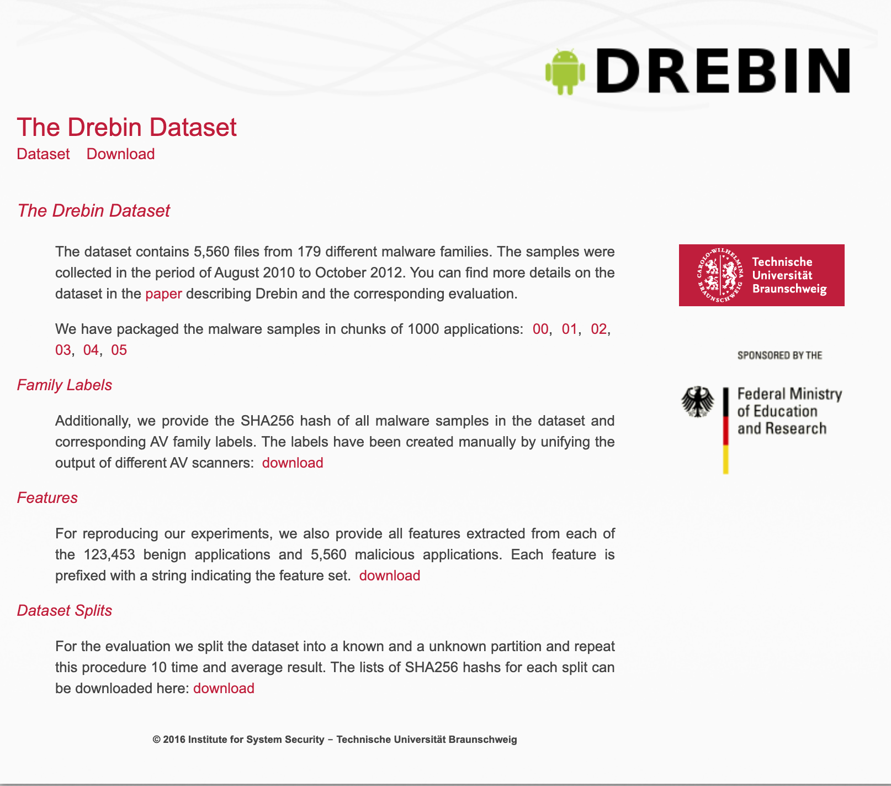
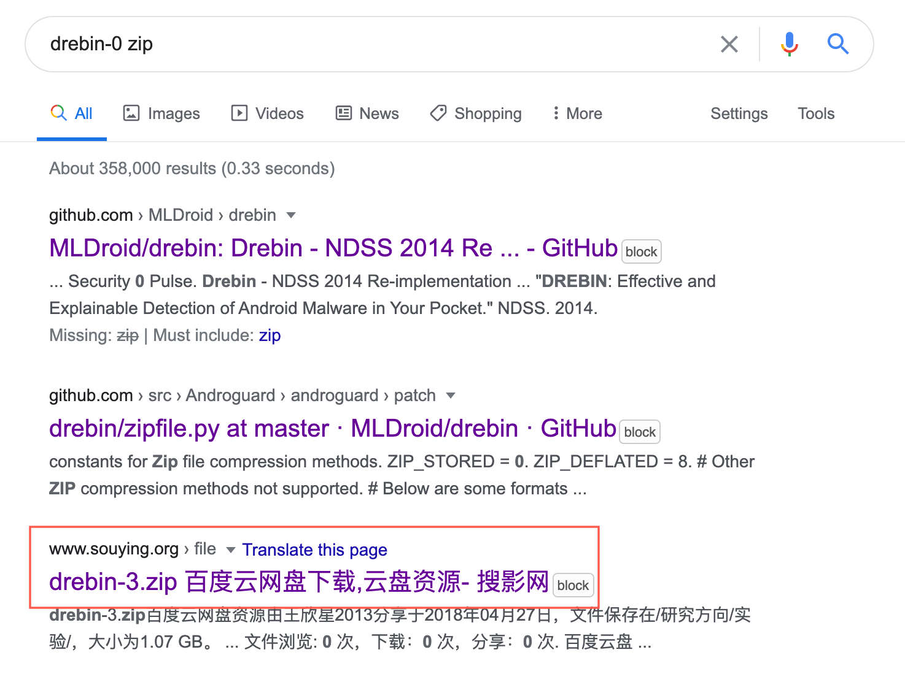
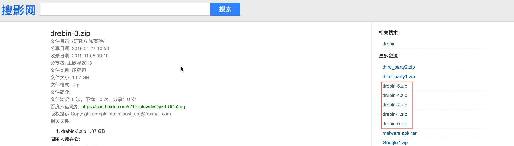

Android 恶意软件研究领域, 有一个数据集叫做 drebin 数据集https://www.sec.cs.tu-bs.de/~dan..., 在 2014 年的一篇论文中放出了这个数据集, 大概有五千多个样本. 首页如下所示

这个样本集包含了 2010-2012 年间的样本, 这么多年, 很多人都用了这个样本集做实验发论文.
Drebin 数据集的申请比较麻烦, 自己来这里https://www.sec.cs.tu-bs.de/~dan... 看看. 现在五六年过去了, 已经没人维护了, 发个邮件也没人理你了.
为了和其他采用该数据集的论文做实验对比, 你需要有这么一个数据集, 然而当你没有这个数据集的时候, 就遇到了巧妇难为无米之炊的问题.
当你通过搜索引擎搜索 drebin 这个关键词你大概率会搜索到这篇中文博客 Android 恶意样本数据集汇总 https://furur.xyz/2018/06/01/And..., 给这位大哥发了邮件, 没理会, 下面好多评论都是要这个数据集的, 没看到作者回复.....所以.....失败!
...后来我就求助其他方法了, 偶然一次机会,在这里https://github.com/ccapontep/Mal... 找到了一份数据, 说是Drebin 的原始数据, 大喜, 结果打开一个只有一百来兆, 里面是提取好的特征, 里面列出了 Drebin 的每一个样本的哈希值, 不是原有应用程序.....失败!
但是天无绝人之路, 既然我有哈希值, 那我就能上网找找. 我首先去了 VirusTotal 这里, 能搜索到哈希值对应的文件, 但是无法下载, 需要旗舰帐号才能下载, 可是我哪有这么高端的帐号....失败!
当然这个问题怎么能难倒我呢! 我想到了 koodous 这个网站, 它可以免费下载, 虽然每天有次数限制, 但是我可以多注册几个帐号, 然后每天下载点, 五千个样本下载个一个月怎么也能下载完了吧! 妙也! 于是乎乎一顿操作, 注册了好几个帐号, 然后又糊糊一顿操作根据 koodous 提供的 API 接口写了个脚本根据哈希值下载. 然而也不知道咋回事,koodous 不让下载了, 虽然爬虫我限制频度了...最后还是还没搞定....失败!
可以说这次失败真是扎了老心了, 花费了那么多时间与精力, 没下载到!
痛心疾首的我, 决定去 QQ 群碰碰运气, 问了好几个群, 没有...于是有一次...失败!
这几重失败打击, 让我做出了一个艰难的决定....放弃.....其实内心想的是,以后老子一定要搞定你!
早上过来读了一会儿论文, 又看到介绍数据集, 于是我就再次把这个事情又搞起来了.
这次我换了个方式, 我找到它的下载链接
https://www.sec.cs.tu-bs.de/~danarp/drebin/dataset/drebin-0.zip
然后取后面的 drebin-0.zip 来作为关键词搜索, 由于这个关键词容易被视作链接,所以我就采用 drebin-0 zip 来作为关键词, 放狗搜索. 于是我找到了一个很神奇的网站

打开一看, 震惊, 里面全是我要的

然后里面的百度云链接还没有失效, 于是我赶紧把所有的 drebin 压缩包保存到我的百度云了.
当然了, 你以为结束了? 没有! 这些压缩包是有密码的.
上网搜密码, 搜索不到, 于是就打算暴力破解.
暴力破解前, 我先手动试了几下常用密码, 因为很多样本分享的人喜欢用 infected 来作为压缩密码, 于是我试了一下, 正确! 放一下解压后的文件列表
➜ drebin ls -1 drebin-1 | wc -l
1000
➜ drebin ls -1 drebin-2½ | wc -l
1000
➜ drebin ls -1 drebin-33⅓ | wc -l
1000
➜ drebin ls -1 drebin-4 | wc -l
1000
➜ drebin ls -1 drebin-5 | wc -l
560
目前手里又 1T 左右的安卓样本, 打算搞一个样本分享网站.